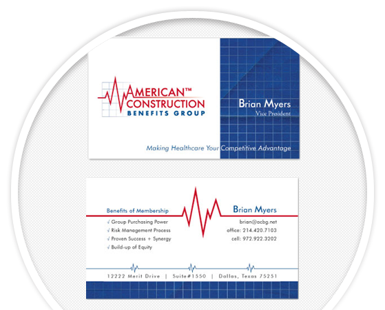
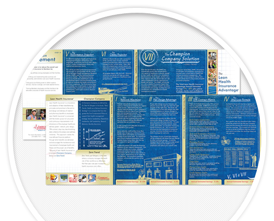
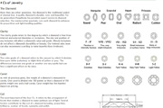
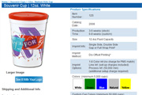

Web Design
Web design is an evolving discipline, transforming the bland information display of the past, into an interactive experience. The goal is to convey the feeling of a brand, to invoke emotion, and to get the participant genuinely interested in what the company is bringing to the table.
The Blueprint
Understanding your goals, looking at history, the players involved and most importantly the context. Messaging comes at many levels, and learning from past mistakes is of utmost importance.
Things to Consider
WEB DEVELOPMENT
Modern web development is my passion. Using innovative techniques, evolving content managment systems and cross-browser methodology to create interactive user experiences are my tools to a successful, useful and cool site.
Printed Marketing
Printed marketing is often the first line any business has in making an impression. The primary goal of a print campaign is to generate interest! My focus is on conveying the same brand image across all mediums to ensure the user gets the same feeling, no matter where they find you.


There are a lot of different types of printing, and I have many more example available upon request!
Search Engine Optimization
Any website I build has organic SEO in mind, making full use of alt and title tags wherever appropriate. I will also not use the H1 tag more than once on a page, and am a believer in using Meta Descriptions... If you'd like to take it a step further, allow me to run Adwords campaigns. I always set benchmarks to track progress along the campaign and can make necessary course corrections to boost conversions.
Inspirational Sources
I draw inspiration from many sources, and always have an ear to the ground on the latest techniques and trends on the web. Here are some of my favorite resources I find myself at more often than not: Smashing Magazine, CSS Play, Awwwards, Mashable & W3C
Agency Experience
Many agencies focus purely on design, without having the bandwidth or resources to handle web development projects. Let me help! I love taking a concept or PSD and running with it to create a beautiful modern website.
Building quality websites, pixel perfect, everytime.
Example Websites


Like what you've seen? Got Questions? Feel free to Contact Me!
Social Media
Keeping up with social media is now easier than ever, there are many ways to tie your social media and website together!
facebook
twitter
pinterest
YouTube
Use Facebook comments on your blog articles
Attach video from Vimeo/YouTube
Display tweets on your site
Cross-promote your products
Theme social media pages
Allow your customers to interact
Just for a reference point, see the following facts taken from the PewResearch Internet Project:
As of September 2013:
71% of online adults use Facebook
18% of online adults use Twitter
17% use Instagram
21% use Pinterest
22% use LinkedIn